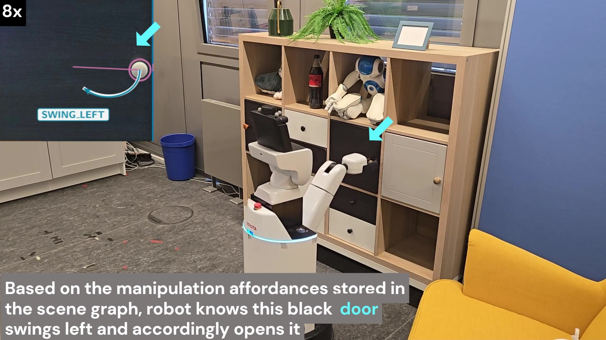
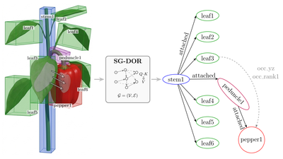
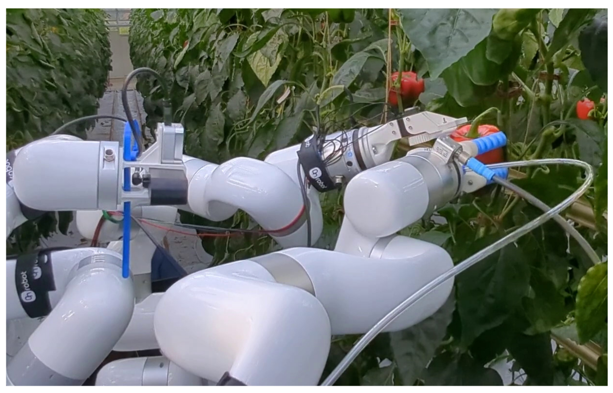
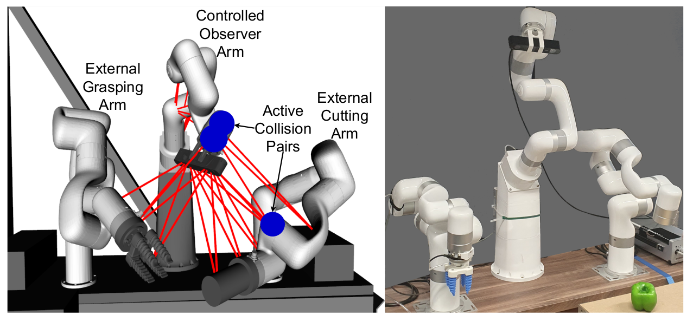
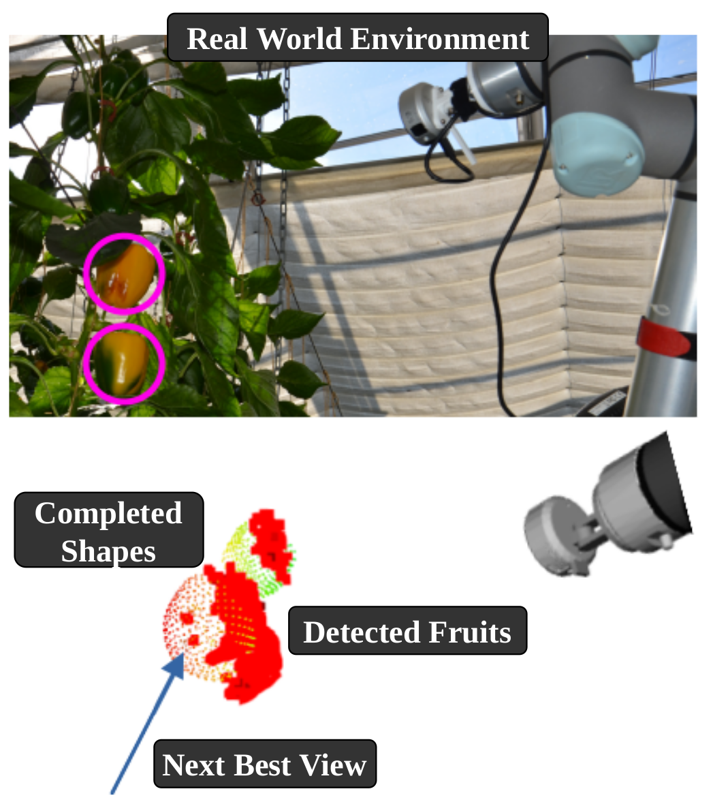
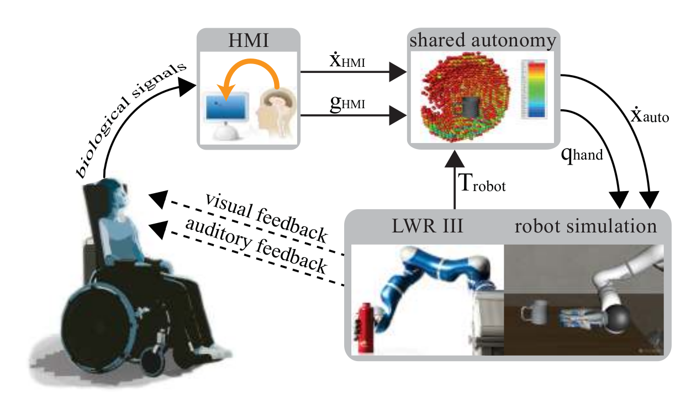

RSS 2027 Shepherd
Serving as a Shepherd for Robotics: Science and Systems 2027.
Rohit Menon is a robotics researcher and PhD candidate at the University of Bonn, advised by Prof. Maren Bennewitz. His research combines perception and reasoning under uncertainty for robot autonomy and interaction. He is especially interested in sparse–dense and global–local models for long-horizon mobile manipulation, with an emphasis on resource-efficient robots that adapt through structured knowledge and interaction.
Before beginning his PhD, he developed perception, manipulation and real-time control systems at NEURA Robotics and DFKI. At NEURA, he co-built the AI team from its inception and later served as Group Leader for AI for Manipulation. He enjoys presenting robotics and science to the public and mentoring students.
Outside research, he enjoys reading, pub quizzes and debates. He also likes trams and double-decker buses, and used to write a personal blog called The Point Isss.
Latest
Serving as a Shepherd for Robotics: Science and Systems 2027.
Serving as a Senior Reviewer for the HRI 2027 Pioneers Workshop.
Two supervised MSc theses received the Bonner Informatik Group Best Thesis Award and the Grace Hopper Thesis Award. HRL news.
Best Poster Award for open-vocabulary semantic search in scene graphs. Award announcement.
My work connects uncertainty-aware perception and reasoning with robot systems that search, interact and manipulate over long horizons.
Learning calibrated representations from incomplete observations, structuring them as object-centric scene models, and deciding which evidence is needed next.
Using persistent world knowledge for object search, active inspection and manipulation as environments and task-relevant beliefs change over time.







Research in PhenoRob, Lamarr and AID4Crops; mentoring students and junior researchers.
Built perception and manipulation architecture, hard real-time control and human-aware sensing for collaborative robots.
Developed planning, control, teleoperation and manipulation software for mobile and high-degree-of-freedom robots.